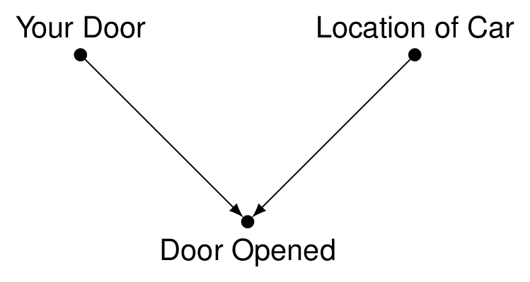

Code
using Plots
plot(sin,
x->sin(2x),
0,
2π,
leg=false,
fill=(0,:lavender))Reflections and tips from public health practice
Since January 2021 to the present, I have served as the state public health officer and director of the California Department of Public Health. From January 2011 to December 2020, I was the health officer of the City and County of San Francisco and director of the Population Health Division at the San Francisco Department of Public Health. From 2003 to 2010, I directed a public health infectious disease emergency preparedness and response center focused on research and training at the University of California, Berkeley School of Public Health. I spent several years studying and preparing others to respond to pandemics from an infectious respiratory pathogen. During this time I developed an interest in complex decision making under uncertainty and time constraints.
The lean DNA encodes for the following elements:
Tomás Aragón, MD, DrPH
State Public Health Officer and Director
California Department of Public Health
Sacramento, California, USA
Clinical Assistant Professor
School of Public Health
University of California, Berkeley, USA

Plot function pair (x(u), y(u)). See Figure 2 for an example.
using Plots
plot(sin,
x->sin(2x),
0,
2π,
leg=false,
fill=(0,:lavender))By default Julia cells will automatically print the value of their last statement (as with the example above where the call to plot() resulted in plot output). If you want to display multiple plots (or other types of output) from a single cell you should call the display() function explicitly. For example, here we output two plots side-by-side with sub-captions:
using Plots
display(plot(sin, x -> sin(2x), 0, 2))
display(plot(x -> sin(4x), y -> sin(5y), 0, 2))